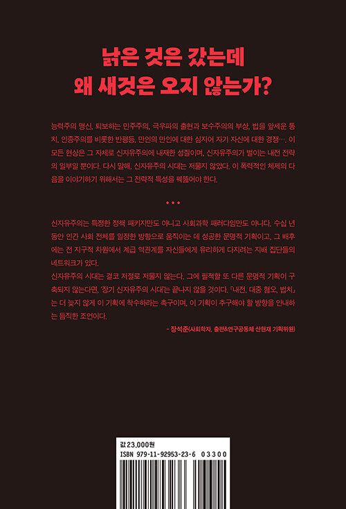
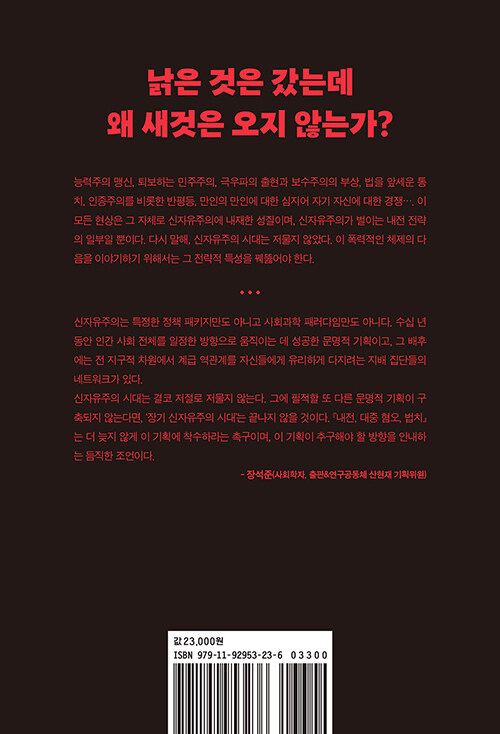

내전, 대중 혐오, 법치
신자유주의는 어떻게 지배하는가
피에르 다르도, 크리스티앙 라발, 피에르 소베트르, 오 게강 지음 / 정기헌 옮김 / 장석준 해제
 

2024.02.29. 출간 / 400쪽 / 143*210mm / 무선 / 사회과학
2008년 세계금융위기가 발생하자 수많은 지식인이 신자유주의 시대에 종언을 고했다. 그로부터 10여 년이 흐른 뒤 코로나19 팬데믹이 전 세계를 덮쳤고, 또다시 신자유주의 체제 종식에 관한 말이 쏟아져 나왔다. 그런데 과연 신자유주의는 끝났는가? ‘포스트 신자유주의’라는 말마저 식상한 것이 되어버린 지금, 여기에 단호히 ‘아니다’라고 이야기하는 이들이 있다. 『내전, 대중 혐오, 법치』를 쓴 네 명의 저자들이다.
신자유주의를 푸코의 통치성 관점에서 분석하여 “모든 종류의 평등 요구를 무력화하려는 기획”으로 바라본 저자들은, 이 폭력적인 체제의 특성을 ‘내전’이라는 키워드로 요약한다. 신자유주의는 그 출발부터 ‘자유’의 이름으로 ‘평등’에 맞서는 내전을 전략으로 택했다는 것이다. 이는 지배 세력이 국민 일부의 적극적 지지에 힘입어 다른 국민 일부를 상대로 벌이는 전쟁이다. 그들은 시장 질서와 경쟁에 반대하는 모든 ‘적’을 분쇄하기 위하여 법을 이용한 지배, 즉 법치를 내세우며, 경찰과 군대를 동원한 직접적인 폭력도 서슴지 않는다. 이 모든 것의 바탕에는 대중 혐오, 즉 반민주주의 정서가 자리 잡고 있다.
이 책은 하이에크와 대처에서부터 집권 좌파의 몰락, 신보수주의와 극우 포퓰리즘의 부상까지, 신자유주의의 계보를 따라 그것의 지배 전략을 파헤친다. 지난 80여 년 동안 보수는 물론 진보 세력까지 이 체제의 교리를 충실히 따랐다. 신자유주의의 작동 방식을 낱낱이 드러낸 이 책은 낡은 것을 떠나보내고 대안을 모색하는 이들, 진정 ‘새로운 세계’로 나아가고자 하는 이들에게 중요한 지침이 되어 줄 것이다.